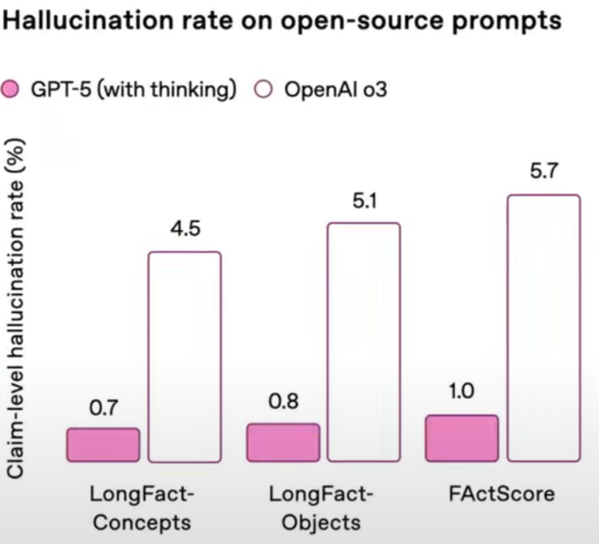

GPT-5在数学和幻觉上的表现
北京时间2025年8月8日凌晨1点，加州时间2025年8月7日上午10点，GPT-5终于发布了。
我关注了两点——数学和幻觉。
数学
GPT-5
之前的流言说：非推理版的 GPT-5 在AIME 2025（美国IMO国家队选拔赛试题）上拿下100分。但这是假的。
事实上，在不使用工具的情况下，非推理版拿到了61.9分，推理版拿下了94.6分。

前代模型
前代模型中，在AIME 2024上，在不使用工具的情况下，GPT-4o不足20分，o1-preview 60分，o1 80分，o3 90分。


思索
- 为什么非推理模型能进步到60分呢？我猜采用了类似蒸馏的方法，用推理模型给出的概率分布教学非推理模型。
- Kimi-k2和DeepSeek-V3的AIME表现如何？——不到60分

幻觉
GPT-5
GPT-5的幻觉低于o3，很好。
前代模型
从ChatGPT 3.5到ChatGPT o1，幻觉率（大体上）是在下降的。
但是，o3的幻觉率大于o1，o4-mini的幻觉率大于o3！

原因众说纷纭——一个合理点的说法是，因为OpenAI为了节约成本抛弃了Reasoning Token。但是这也无法解释为啥o3的幻觉率大于o1。
思索
- GPT-o3 System Card 的两个数据集均来自OpenAI。为什么他们不在前两个数据集上也测一下呢？
- o3的幻觉率大于o1，o4-mini的幻觉率大于o3，我觉得这是一个值得研究的科学问题。但是现在看来OpenAI不想研究。
- 我认为LLM是取代不了搜索引擎的。
- Ronald Fisher 写文章说现有证据只能说明吸烟和肺癌有相关性，不能说明有因果性。Albert Einstein认可计划经济，Von Neumann反对计划经济。他们仨都是人类历史上最聪明的人之一。Fisher是统计学之父，这就是他的专业；Von Neumann在经济学上很有建树，这也算是他的专业。
- 在没有互联网的时代，你听到了他们仨的观点，应该去问问其他人的看法，或者去翻翻书（书是前辈们的看法）。做一个交叉验证。
- 在有互联网的时代，搜索引擎可以帮你更快速地询问其他人、前辈们的看法。
- 所以，就算LLM达到了Fisher, Einstein, Neumann的水平，也不能取代搜索引擎。
- 参考：